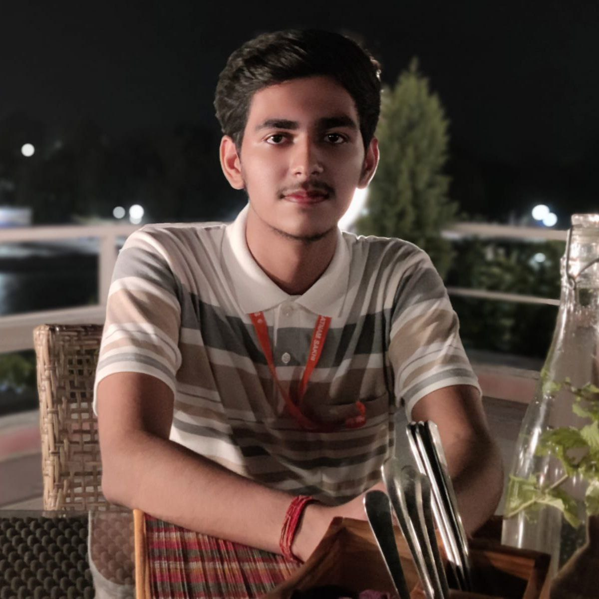

-
Hey there! I'm Omansh Arora, a sophomore at IIIT Delhi, pursuing a dual major in computer science and design.
-
My coding skills are put to work to bring innovative ideas to life, and my design skills ensure they shine brightly.
-
I have a passion for design and am actively involved in creating captivating visuals for various college events.
-
I'm a proud member of the design teams at Google Development Student Club (GDSC) and Evaristé (Math Soc).
-
My journey in computer science and design has taught me that being both a CS enthusiast and a designer is a unique and powerful combination.
⋯